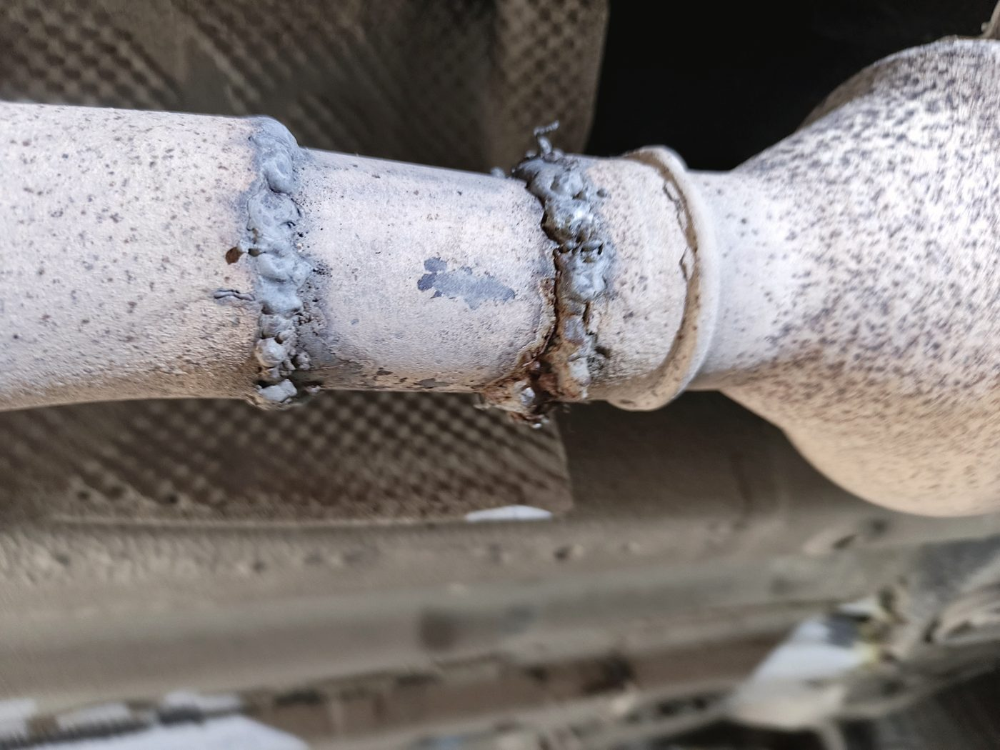
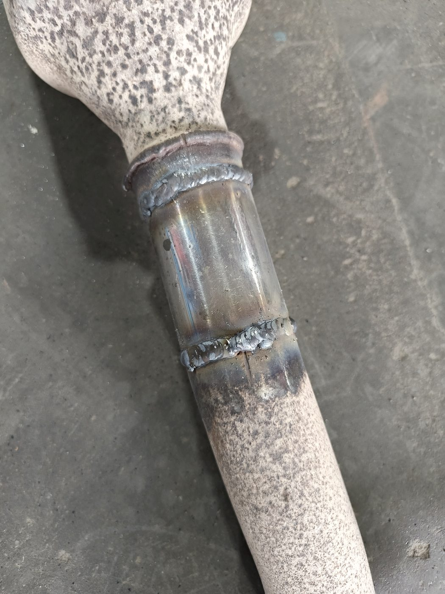
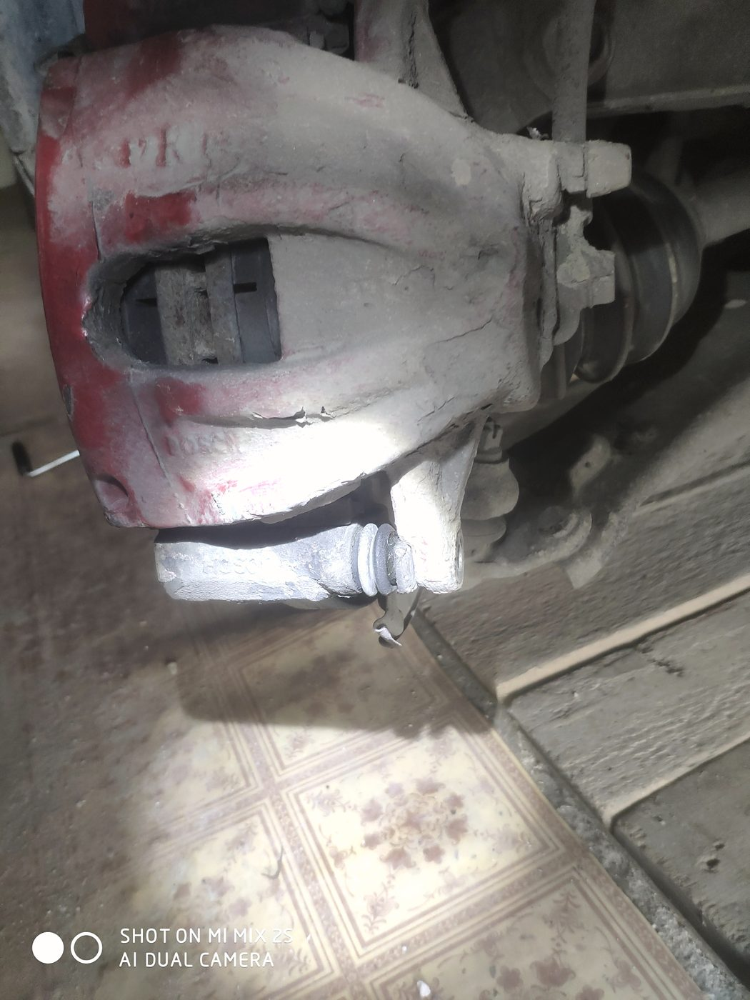
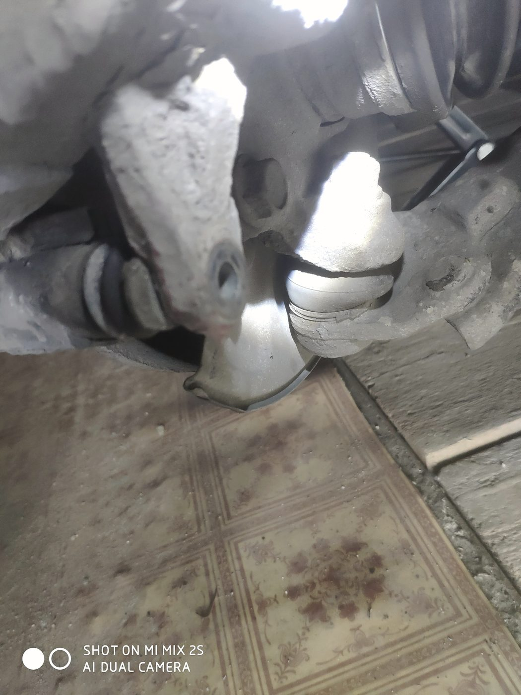
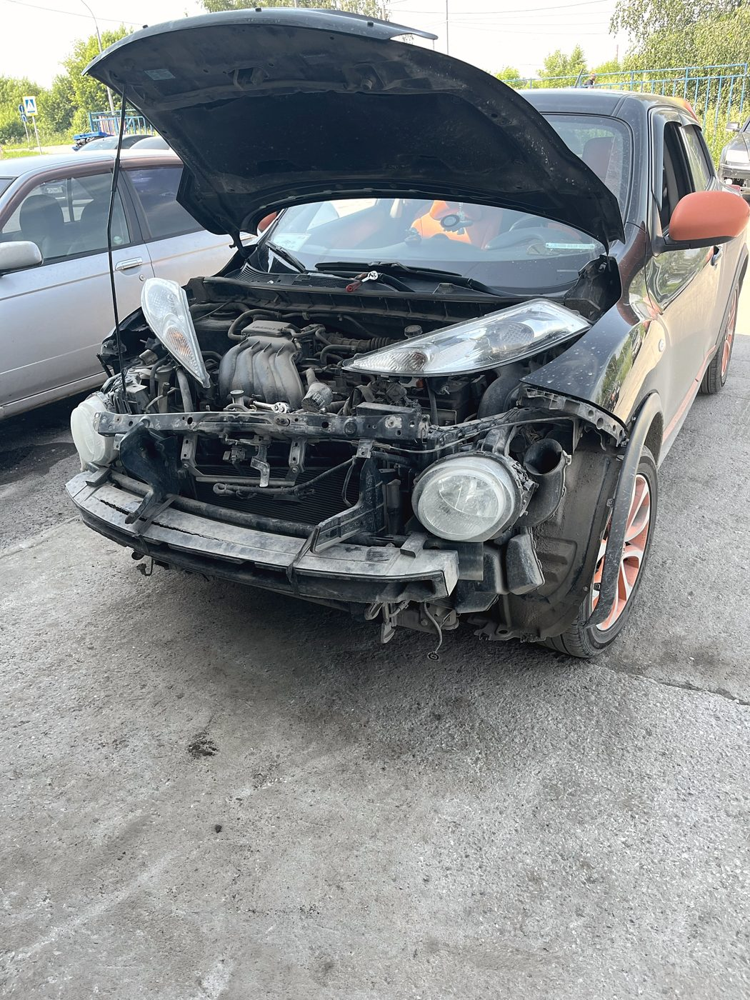
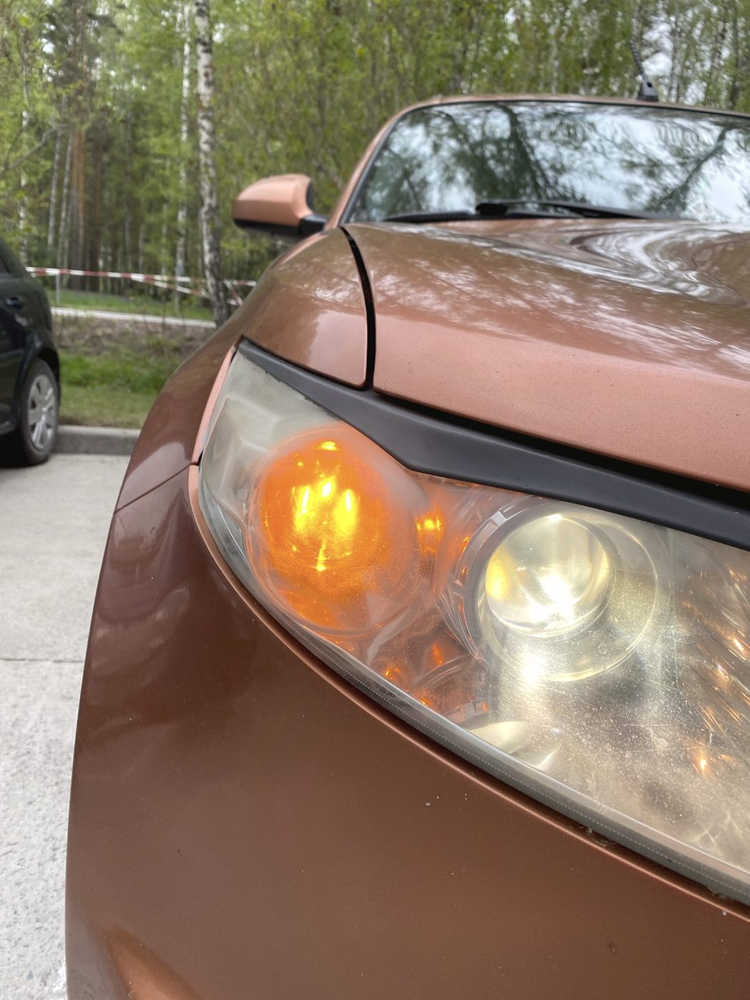
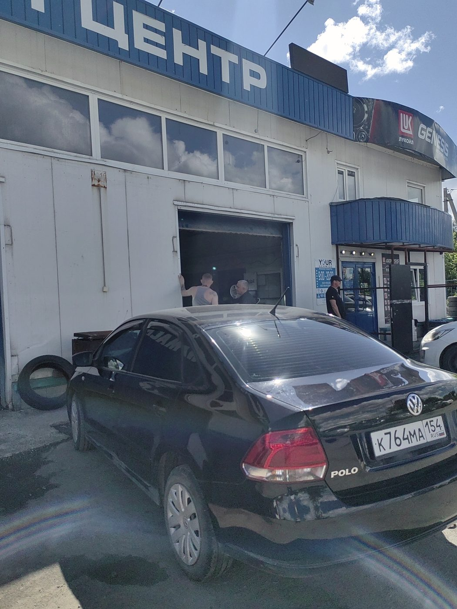

Автосервис · улица Петухова, 152/2 · Кировский район
Машина не новая?
Не боимся работы
Диагностика без выдуманных дефектов, сварка вместо замены узла в сборе и честный минимум по деньгам. За возрастные машины, от которых часто отказываются, здесь берутся спокойно.

Возрастные машины
Там, где отказывают,
мы обычно беремся
Чем старше машина, тем чаще слышишь «мы такое не делаем». Прикипевший болт, снятой с производства детали нет, проще предложить поменять узел целиком. Мы идём другим путём.
- Варим выхлоп и пороги вместо покупки нового узла в сборе
- Подбираем аналог, когда оригинала уже нет в природе
- Восстанавливаем то, что можно восстановить, а не только меняем
- Работаем с прикипевшим и сорванным крепежом без «приезжайте позже»
- Ставим нештатный свет и оборудование, если оно не лезет в штатное место
- Считаем ремонт от минимума, а не от полной переборки
Под ключ
Вам не нужно
искать запчасти самому
«Очень хорошо, что не нужно ничего думать, искать или ехать покупать самому по запчастям: приехал, сказал, что беспокоит, посмотрят, сами всё закажут и привезут, и поставят» — из отзыва Дениса.
Описываете, что беспокоит. Смотрим и называем, что действительно нужно делать, а что можно не трогать.
Подбираем деталь и заказываем сами. Вам не нужно ездить по магазинам и разбираться в артикулах.
Деталь приходит к нам, ставится в тот же заезд. Вы приезжаете один раз, а не три.
Работы
Что делаем
Диагностика ходовой
Показываем реальное состояние и называем минимум, который нужно сделать сейчас. Выдуманные дефекты не приписываем.
Компьютерная диагностика
Ищем причину, а не меняем всё подряд. В отзывах пишут: там, где раньше поменяли всё что можно, здесь определили сразу.
Ходовая часть
Стойки, рычаги, ступицы, сайлентблоки, тормоза и суппорты.
Двигатели
Ремонт бензиновых моторов, устранение течей, замена узлов.
АКПП и МКПП
Обслуживание и ремонт коробок, замена масла.
Развал-схождение
Настройка углов после ремонта подвески, на месте.
Выхлопная система и сварка
Завариваем прогары и трещины, меняем элементы. Часто это в разы дешевле, чем менять всю систему.
Антикоррозийная обработка
Днище, арки и скрытые полости. Для возрастной машины это продление жизни кузова.
Климат и кондиционер
Заправка, поиск утечек, обслуживание отопителя.
Свет и электрика
Замена и доустановка ламп, в том числе когда они не встают в штатное место.
Шиномонтаж
Переобувка по записи и замена колодок заодно.



Отзывы · 4,5 из 5 по 277 оценкам в 2ГИС
«Не стали навязывать выдуманные дефекты, сказали честно, что надо менять. Вышло по минимуму»
Вадим Ложкин · 17 апреля 2026 · на всё ушло около полутора часов
Появился страшный звук. Ранее обращалась в другие места, поменяли всё что можно, но проблема не уходила. Тут сразу определили, за что спасибо.
Елена К. · 7 марта 2026
Живём рядом и ездим сюда на диагностику и ремонт. У нас машина не новая, ребята не боятся работы. Рекомендуем.
Надежда Непша · 20 июня 2026



Контакты
Петухова, 152/2
Кировский район, Новосибирск